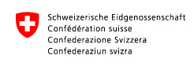

% if mode == "prod":
% else:
%endif
This application is a preview. Development is ongoing.
Please provide feedback:
info[at]geo.admin.ch
or
Tweet to @swiss_geoportal
(print is not functional, for now...)
% if mode == "prod":
% else:  %endif
Print
<%include file="src/print/partials/form.mako.html"/>
close
open
% if mode == "prod": % else: %endif